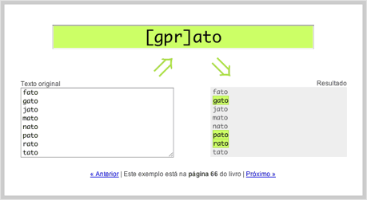
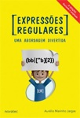

AVISO: Há uma edição mais recente deste livro.
|
ESGOTADO!
Veja a edição mais recente |
Ficha
| Título: | Expressões Regulares - Uma abordagem divertida |
| Autor: | Aurelio Marinho Jargas (site, blog, twitter) |
| Editora: | Novatec |
| Edição: | 3ª |
| Ano: | 2009 |
| Páginas: | 208 |
| Formato: | 16×23 cm |
| Peso: | 333 gramas |
| Encadernação: | brochura |
| Idioma: | Português |
| Lançamento: | 7 de outubro de 2009 (festa de lançamento, anúncio do autor) |
| ISBN: | 978-85-7522-212-6 |
| Preço: | R$ 45,00 |
Resenha

As Expressões Regulares podem ser utilizadas em diversos aplicativos, como editores de textos, leitores de e-mail e linguagens de programação, no UNIX, Linux, Windows e Mac. Qualquer usuário de computador pode usufruir dos seus benefícios. Profissionais que manipulam texto e dados economizarão horas de serviço braçal: escritores, revisores, tradutores, programadores e administradores de sistema.
Em uma abordagem incomum de encontrar em livros técnicos, as explicações didáticas e divertidas tornam prazerosa a leitura de um tema tão árido e abstrato. É uma conversa entre amigos, partindo do básico até chegar aos conceitos avançados. Esta obra revela aos poucos o poder das expressões, o leitor irá saborear o tema descobrindo seus segredos descontraidamente.
Esta 3ª edição traz 40 páginas adicionais, com muitas novidades. Há uma introdução comemorativa que desvenda os bastidores da escrita do livro. A linguagem brasileira Lua ganhou uma análise especial, recheada de exemplos e dicas. Programadores Windows vão gostar do extenso tópico sobre o framework .NET, com exemplos funcionais em Visual Basic e C#. Há novidades nos bancos de dados, com tópicos para Oracle e SQLite. Para fechar o pacote de novidades, um tópico sobre o editor de textos Google Docs e outro sobre o HTML5, preparando o leitor para o futuro da Internet.
Saiba mais em www.piazinho.com.br.
Download (PDF)
- Sumário
- A lista completa dos tópicos abordados no livro.
- 10 anos de Expressões Regulares
- Capítulo especial com 13 páginas, exclusivo dessa edição comemorativa do livro, que conta minha história de uma década com as expressões, além de mostrar os bastidores da escrita do livro.
- Apêndice B – Tabelas
- No final do livro, há um apêndice com várias tabelas, que resumem vários conceitos ensinados no livro. É um guia de consulta rápida (cheat sheet), muito útil para aqueles momentos de dúvida na hora de usar as expressões. Preparei esta versão especial em PDF, juntando todas as tabelas em uma única página A4. Boa para imprimir e/ou salvar em seu smartphone. Aproveite!
Exemplos interativos
Uma novidade empolgante da 3ª edição são os exemplos interativos. Que tal ir testando os exemplos do livro durante a leitura? Agora é possível:
|  |
| Clique aqui para usar os exemplos interativos |
Esta ferramenta, criada especialmente para o livro, interpreta expressões regulares em tempo real e mostra na tela o resultado. Ela possui cadastrados todos os exemplos do livro, juntamente com o número da página em que eles se encontram. Assim, o leitor pode testar cada exemplo, fazer variações, mudar a expressão, experimentar textos diferentes, enfim, fixar o aprendizado na prática.
Novidades da 3ª edição
Além da atualização do texto já existente, com a verificação e correção de erros, há MUITO conteúdo novo: são 40 páginas a mais do que a 2ª edição. Veja quais são os tópicos novos que entraram no livro:
- Google Docs
- Você sabia que desde março de 2009 é possível usar expressões regulares em seus documentos do Google Docs? Mas quais metacaracteres utilizar? Como casar múltiplas linhas/parágrafos? E a acentuação, como fica? E aquele erro de “sequência vazia”? Aprenda os detalhes sobre a pesquisa e substituição de textos usando as expressões, agilizando seu uso do editor.
- Oracle
- Vai dizer que você não sabia que podia usar as expressões no Oracle? Pode sim! Para fazer queries, comparações e até constraints, agilizando a validação de campos já no momento do cadastro. São ao todo cinco operadores que aceitam expressões regulares, dando-lhe muito poder sobre o seu banco de dados! Se você trabalha com Oracle, as expressões podem mudar sua vida.
- SQLite
- O SQLite é tão leve, mas tão leve, que seu operador REGEXP vem vazio. É a linguagem hospedeira que deve prover o casamento de expressões. Não entendeu nada? Não se preocupe, isso está bem explicado no livro, inclusive com um exemplo completo em Python. Se você já usa o SQLite, que tal turbinar suas queries com expressões regulares?
- HTML 5
-
Se você programa para Web, sabe o quanto é chato fazer validação de campos em formulário, não é mesmo? Idade, e-mail, URL, datas, CPF...
Que tal usar expressões regulares direto na tag INPUT? Por exemplo:
<input type="text" name="cpf" pattern="\d{3}\.\d{3}\.\d{3}-\d{2}">. E pronto! Validação instantânea, sem precisar mexer com DOM, JavaScript, eventos e outros complicadores. Aprenda os detalhes sobre essa novidade tão esperada! - Lua
- Como Lua é uma linguagem genuinamente brasileira, ela foi homenageada com uma análise detalhada de suas expressões regulares (patterns). Saiba tudo sobre as funções, seus argumentos e retornos. Aprenda também as diferenças dos metacaracteres, pois alguns não existem, já outros são novidade, como as classes de caracteres (%a, %d, etc.).
- .NET (Visual Basic e C#)
- Se você programa no framework .NET e ainda não usa as expressões regulares, está perdendo tempo! A Microsoft fez um bom trabalho e colocou um suporte bem completo às expressões em seu framework. Seu uso é padronizado, independente de qual linguagem você utilize. Para facilitar o entendimento, todos os exemplos de .NET no livro foram escritos tanto em Visual Basic quanto em C#.
- OpenOffice / BrOffice (reescrito)
- Este tópico já existia, mas foi completamente reescrito. Versões mais recentes do BrOffice trouxeram melhorias ao suporte às expressões, como a possibilidade de usar retrovisores na substituição. Mas também há algumas pegadinhas no uso das classes POSIX e no casamento de início/fim de linhas e parágrafos. Aprenda os detalhes e pare de arrancar os cabelos!
- 10 anos
- Em 1999 eu conheci as tais expressões regulares. De lá pra cá, me apaixonei pelo assunto e acabei me tornando especialista. Escrevi programas, ministrei cursos e palestras, escrevi livros. Para comemorar esta década dedicada às expressões, contei um pouco dessa história, inclusive com os detalhes da rotina de escritor, que mostra como são os bastidores da escrita de um livro.
- Usei meu twitter intensivamente durante a escrita desta 3ª edição. Anunciei cada passo da escrita: tópicos novos, pesquisas, dúvidas, revisões. Também pedi aos leitores para me ajudarem com o tópico “Sobre o autor”. Recebi muita ajuda, ideias e sugestões, e pode ter certeza, este livro está com uma qualidade muito maior, graças a essa colaboração. Veja todas as mensagens
Comparativo
 |
 |  |
||
|---|---|---|---|---|
| Guia rápido | 1ª edição | 2ª edição | 3ª edição | |
| Ano: | 2001 | 2006 | 2008 | 2009 |
| Páginas: | 96 | 144 | 168 | 208 |
| Formato: | 10×23 cm | 14×21 cm | 16×23 cm | 16×23 cm |
| Editores: | Emacs Vim Word |
Emacs Vim Word OpenOffice |
Emacs Vim Word OpenOffice |
Emacs Vim Word OpenOffice Google Docs |
| Databases: | - | - | MySQL PostgreSQL |
MySQL PostgreSQL Oracle SQLite |
| Linguagens: | Awk JavaScript Perl PHP Python Sed Tcl VBscript |
Awk JavaScript Perl PHP Python Sed Tcl VBscript C Java Ruby |
Awk JavaScript Perl PHP Python Sed Tcl VBscript C Java Ruby ActionScript Grep PHP (PCRE) Shell Script |
Awk JavaScript Perl PHP Python Sed Tcl VBscript C Java Ruby ActionScript Grep PHP (PCRE) Shell Script HTML5 Lua .NET (VB, C#) |
Dica: Se você só tem o guia rápido ou a 1ª edição, as diferenças para esta 3ª edição são enormes, eu recomendo a compra. Além dos vários tópicos novos, o capítulo de linguagens de programação foi reescrito na 2ª edição, ficando mais completo e cheio de exemplos. Veja como exemplo o tópico de Awk. A lista completa das mudanças feitas na 2ª edição está aqui.
Comprar
Você é colecionador e quer comprar essa edição antiga do livro?
Essa edição está esgotada, porém, às vezes, algumas livrarias ainda possuem um último exemplar em estoque. Veja se aparece alguma oferta nestes sites: BuscaPé, JáCotei, BondFaro.
Dica: Para evitar transtornos, entre em contato com a livraria e pergunte se o livro realmente existe no estoque deles.
Se você procura a edição mais recente desse livro, clique aqui.
« Voltar para a página principal